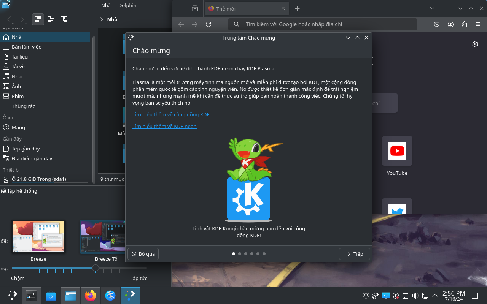

Caligraph Linux: Linux cho người Việt
Mục tiêu lâu dài của Caligraph là làm ra một bản phân phối Linux được Việt hóa hoàn toàn, dựa trên Ubuntu/Debian với môi trường KDE.
Dự án này có một số tiêu chí kim chỉ nam như sau:
- Giao diện được bản địa hóa tiếng Việt 100% với tất cả ứng dụng đi kèm
- Phù hợp cho người không biết tiếng Anh hoặc ít kinh nghiệm máy tính
- An toàn, thân thiện, dễ dàng sử dụng cho công việc, truy cập internet và nghiên cứu
- Dựa vào Ubuntu/Debian/KDE và tối thiểu việc duy trì các tùy biến đặc thù, trừ khi bắt buộc
- Phi lợi nhuận, phi thương mại, tuân thủ tinh thần phần mềm tự do và mã nguồn mở*
Caligraph Linux giúp mọi người Việt Nam tiếp cận công nghệ máy tính dễ dàng hơn, không phụ thuộc vào trình độ ngoại ngữ hay kỹ thuật.
Cộng đồng: Chat ở Discord
Các dự án con:
- Việt hóa KDE: Tình hình (Đã có bản thử nghiệm cho người biết dùng Linux)
- Việt hóa LibreOffice: Chưa làm.
- Việt hóa Krita: Chưa làm.
- Đóng gói Kubuntu/KDE Neon: Chưa làm.

*: Các chương trình và mã nguồn để xây dựng bản phân phối được Caligraph mở nguồn và tiếp nhận đóng góp, nhưng công nghệ dịch máy phần mềm từ Anh sang Việt của Caligraph hiện tại không/chưa mở.
Dự án này do kỹ sư, ts. Trương N. H. Huân -- là người dùng Linux và KDE trong 20 năm vừa qua -- khởi xướng.